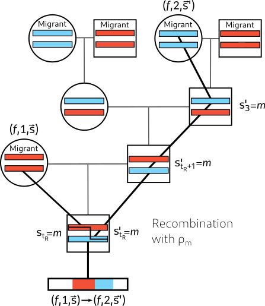
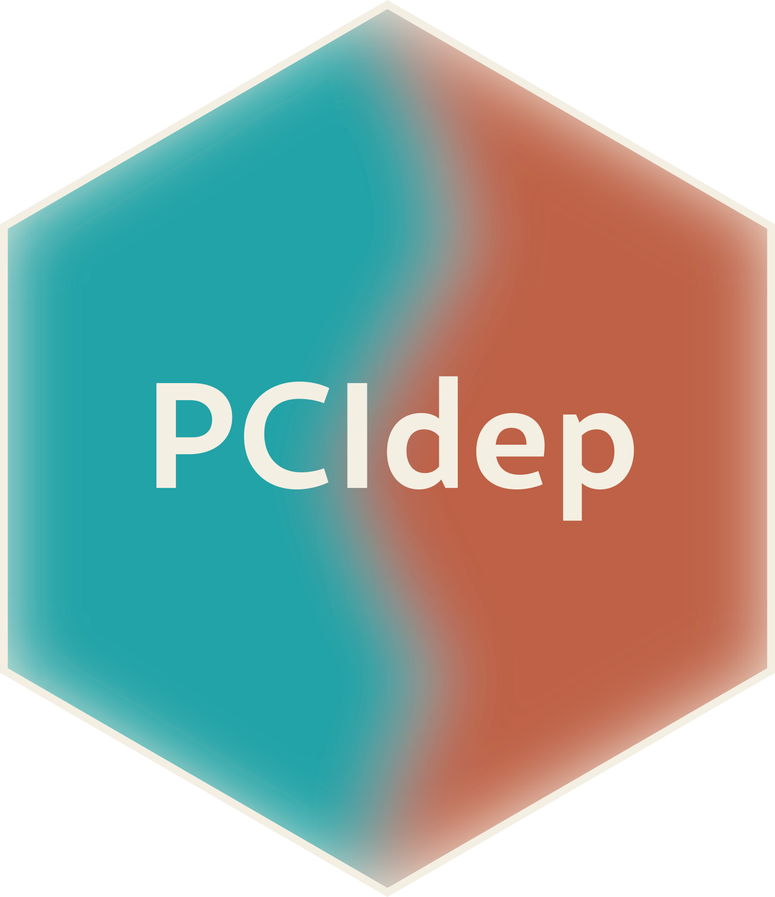
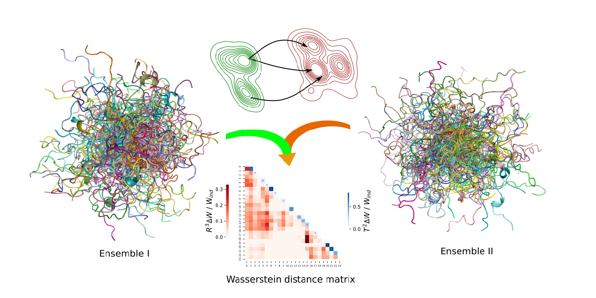

This page gathers software and computational tools developed (and mantained) in my research.

A Python package for modelling ancestry patterns along the genome, including sex-biased migration and X-chromosome admixture.

An R package for post-clustering inference under arbitrary dependence between features and observations.
An R package for two-sample goodness-of-fit testing on the two-dimensional torus using optimal transport.
A Jupyter notebook to characterize intrinsically disordered protein ensembles as a weighted family of contact maps.

A Wasserstein-based Jupyter notebook designed to compare ensembles of intrinsically disordered proteins.